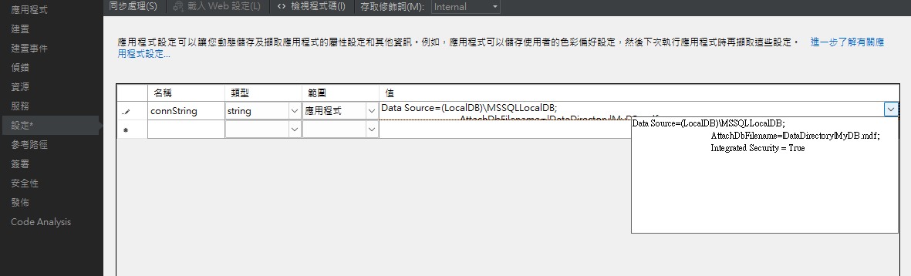
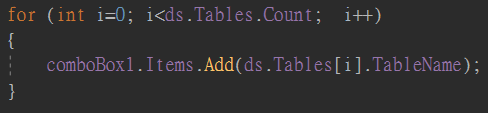

陳杰龍的筆記網站
陳杰龍的筆記網站 主頁
主頁 歸檔
歸檔 分類
分類 其他
其他 關於我
關於我 資料庫應用程式設計 期中筆記
資料庫應用程式設計 期中筆記
資料表欄位的資料型別
SQL語法
- 建立外來鍵
CONSTRAINT [FK_員工_ToTable] FOREIGN KEY ([部門編號]) REFERENCES [部門]([部門編號]) - 找出全部資料
SELECT * FROM 員工 - 特定資料
SELECT 員工編號, 電話 FROM 員工 - 別名
SELECT 員工編號 AS 識別編號, 電話 AS 連絡電話 FROM 員工 - 查詢紀錄筆數，後面加上WITH TIES為相同值也印出
SELECT TOP 2 * FROM 員工(前二筆)
SELECT TOP 50 PERCENT * FROM 員工(前50%) - 加總與平均
SELECT 姓名, (測驗1+測驗2) AS 總成績, (測驗1+測驗2)/2 AS 平均 FROM 員工 - 條件
SELECT 姓名, (測驗1+測驗2) AS 總成績, (測驗1+測驗2)/2 AS 平均 FROM 員工 WHERE ((測驗1+測驗2)/2>70 AND 測驗1>90) - 如果欄位的值是字串，需加上N，否則會被認為是字串
e.g. WHERE 帳號 = N'aaa1123' AND 密碼 = N'bbb321' - WHERE配合LIKE進行萬用字元查詢
SELECT * FROM 員工 WHERE (地址LIKEN'%北平東路%') - IN找出符合項目的值
SELECT * FROM 員工 WHERE 姓名 IN (N'陳杰龍') - ORDER BY排序，加上DESC為大到小，反之小到大
SELECT * FROM 員工 ORDER BY 測驗1
SELECT * FROM 員工 ORDER BY 測驗2 DESC
- JOIN差異
LEFT JOIN：SELECT * FROM 員工 LEFT JOIN 部門 ON 員工.部門編號 = 部門.部門編號 - 聚合函數
- SUM
- AVG
- MAX
- MIN
- COUNT：SELECT COUNT(*) AS 筆數 FROM 員工
- 寫入資料
SET IDENTITY_INSERT 部門 ON
INSERT INTO 部門(部門編號, 部門名稱) VALUES (4, N'設計') - 刪除資料
DELETE FROM 部門 WHERE 部門編號 = 4 - 更新資料
UPDATE 部門 SET 部門名稱=N'資料庫' WHERE 部門編號 = 6
ADO.NET
- ADO.NET是應用程式和資料庫來源之間的溝通橋樑
- ADO.NET架構使得資料在處理的同時，不要一直和資料庫連線，而發生一直占用系統資源的現象
- ADO.NET架構分成.NET Framework Data Provider(資料來源提供者)和DataSet(資料處理的核心)
- .NET Framework Data Provider
- 物件
- Connection：提供和資料來源的連接功能
- Command：提供執行存取資料庫命令，並傳送資料或修改資料的功能
- DataAdapter：擔任DataSet物件和資料來源的橋樑
- DataReader：透過Command物件執行SQL查詢命令取得資料流
- 物件
ADO.NET存取
using System.Data.SqlClient;引用命名空間SqlConnection cn = new SqlConnection();宣告SqlConnection cn物件
cn.ConnectionString = @"Data Source=(LocalDB)\MSSQLLocalDB;" +
"AttachDbFilename=|DataDirectory|MyDB.mdf;" +
"Integrated Security = True";給予資料庫路徑
cn.Open(); 資料庫開啟
cn.Close(); 資料庫關閉
cn.State == ConnectionState.Closed 資料庫狀態為關閉
cn.State == ConnectionState.Open 資料庫狀態為開啟
using(SqlConnection cn = new SqlConnection()){
...
}當離開using區塊，會自動釋放cn占用的資源
使用應用程式組態檔存取資料庫路徑
專案上右鍵 => 屬性 => 設定

在程式再加入Properties.Settings.Default.connString
建立DataReader物件
SqlCommand cmd = new SqlCommand("SELECT * FROM 員工", cn);先利用SqlCommand將要的資料抓出來
SqlDataReader dr = cmd.ExecuteReader(); 特過dr物件所提供的方法及屬性即可進行資料的瀏覽
DataReader常用成員
- FieldCount：有幾個欄位，從0開始
- Item[i]：取得第ｉ欄
- Item["欄位名稱"]：指定欄位名稱的欄位資料
- GetName(i)：取得第i欄的欄位名稱，從0開始
DataReader物件讀取資料表資料
for (int i = 0; i < dr.FieldCount; i++)
{
textBox1.Text += dr.GetName(i) + "\t";
}
while (dr.Read())
{
for (int i = 0; i < dr.FieldCount; i++){
textBox1.Text += dr[i].ToString() + "\t";
}
textBox1.Text += "\r\n\r\n";
}
也可以用欄位名稱獲取資料
textBox1.Text += dr["姓名"].ToString();
string searchName = textBox2.Text;
string selectCmd = $"SELECT * FROM 員工 WHERE 姓名=N'{searchName}'";
string selectCmd2 = $"SELECT* FROM 員工 WHERE 姓名 Like N'%{searchName}%'";
SqlCommand cmd = new SqlCommand(selectCmd2, cn);
SqlDataReader dr = cmd.ExecuteReader();
利用輸入姓名查詢員工
DataSet物件
應用程式向資料庫獲取資料時，資料庫會將所擷取的全部資料傳給到DataSet中，此時可以與資料庫中斷連線，更新完再和資料庫連結並更新到資料庫
DataSet ds = new DataSet();建立DataSet物件
SqlDataAdapter daEmployee = new SqlDataAdapter("SELECT * FROM 員工", cn);建立SqlDataAdapter物件，並查詢出來
SqlDataAdapter daDeperment = new SqlDataAdapter("SELECT * FROM 部門", cn);建立SqlDataAdapter物件，並查詢出來
daEmployee.Fill(ds, "員工");Fill方法將查詢結果放到DataSet裡面並命名為員工，產生一個DataTable
daDeperment.Fill(ds, "部門");Fill方法將查詢結果放到DataSet裡面並命名為員工，產生一個DataTable
int n = ds.Tables.Count;獲取這個DataSet裡面有幾個DataTable
string s = ds.Tables[0].TableName;獲取第一個DataTable的名稱
string s2 = ds.Tables[1].TableName;獲取第二個DataTable的名稱
textBox1.Text = $"DataSet中的DataTable的總數：{n}\r\n\r\n取得第1個的DataTable的表格名稱：{s}\r\n\r\n取得第2個的DataTable的表格名稱：{s2}";
dataGridView1.DataSource = ds.Tables["員工"];工具箱裡的DataGridView主要是以表格方式來顯示資料，把DataSet裡的員工DataTable帶給dataGridView1

利用DataSet裡面的DataTable的Name帶給comboBox的Items
dataGridView1.DataSource = ds.Tables[comboBox1.Text];帶給dataGridView1
Command物件成員ExecuteScalar的用法
SqlCommand cmdSum = new SqlCommand("SELECT SUM(薪資) FROM 員工", cn);
lblSum.Text = $"員工資料表薪資加總共{cmdSum.ExecuteScalar().ToString()}";
新增資料
SqlCommand cmd = new SqlCommand("INSERT INTO 部門(部門編號, 部門名稱) VALUES (4, N'設計')",cn);
cmd.ExecuteNonQuery();